Advanced
From here you can Configure SharePoint API permissions,Sync unlicensed users, Show external users etc.
-
Click on Click Here link in settings, which redirect to SharePoint admin centre access API page.

-
There you will find three Microsoft graph under organization-wide. Select and click on Approve one by one for all three Microsoft graph.

Configure SharePoint API permissions
SharePoint admin can configure API permissions. This configuration helps in excluding block sign-in
users, excluding hidden users in GAL,
excluding shared mailbox users of O365, syncing mobile numbers from azure AD.
To confiure SharePoint API permission follow the below steps:
- In SharePoint we have groups - Microsoft 365, distribution list and security.
- Based on selected options you will find groups in dropdown next to search filters.
Filter Group by
- Sync unlicensed users: Technically users who does not contain work email Id in SharePoint profile is considered as unlicensed user, you can sync those users by enabling toggle switch.
Sync unlicensed users

Show external users
If you enable this feature, you can able to view external users. Orange Circle around the image icon indicates it’s a guest user or external users in Employee Directory 365.If you added newly guest users in your O365 it takes 8 to 24 hours to get sync in the Employee Directory.


-
Organizational Chart: If you enable this feature, the organizational chart icon will display on the home page.
Organizational Chart

In the organization chart, the signed-in user can view their reporting or relationship hierarchy in the organization.

You also download the organization chart by clicking on the print icon.

Organizational Chart in Profile Card
It is the individual organization chart of the user. It displays the hierarchy of the users, to whom the user reports, and who reports to the user.

You can also download the organization chart by clicking on the print icon.

Sync employee profile images
Here we have 3 option to sync the images namely SPO, outlook and ED.
In case if you select outlook or ED options, if image is not available for outlook or ED, image from SharePoint user profile if exist.
ED: Change the source of profile images, you can use custom images by placing images in image library.
Click on click here, redirect to image library upload the images. Format of image is -username@domain.com.jpg

Sync and display mobile number from azure
Sync employee profile images from: This works, if SharePoint API is enabled.
It syncs mobile numbers from azure. If the mobile number is not available in azure, it displays the
mobile number if exists in the SharePoint user profile.

User presence
This setting will work if SharePoint API is enabled, it shows MS teams status on profiles in home page.

Auto load instead load more button
If you enable this, users can load more records automatically on scroll or on click of load more button.

Hide side navigation panel in SharePoint page
If you enable this, the side navigation panel of the SharePoint page will hide.


Hide webpart title in SharePoint page
If you enable this, the webpart title of the SharePoint page will hide.


Custom css for webpart to remove spaces
If you enable this, extra space on the screen will hide and displays more profiles on the screen.


Record to load
Load number of profiles on refresh or first-time page load, you can select 25 or 50 or 100. Higher numbers come with additional page load time, please select wisely.


-
Select the template (Birthday or Anniversary template) for which you want to edit as per the requirement.
-
As per requirement, edit the message, add placeholders and upload the image.
-
Finally, Click on the Save button.
Birthday and anniversary templates
On the birthday and anniversary of the user, the user will get notifications. This works on the Power Automate setup. Here you can customize the email template, which will get notified to the users on their birthday or anniversary.

Here you can change template body format for Birthday template and Anniversary template

How to make birth date and hire date property searchable in SharePoint People Search
The below configuration is for the “upcoming birthday and work anniversaries” feature that could be made searchable within SharePoint.
https://YourTenantName-admin.sharepoint.com
Before we begin, there are some basic prerequisites.
(a) This is applicable to Office 365 environments.
(b) Login user should be a SharePoint Admin to access the SharePoint admin center.
A. How to make a birth date property searchable?
Go to the admin center with the below URL.
https://YourTenantName-admin.sharepoint.com
YourTenanatName – Replace your tenant’s name from the above URL.
Click on More features from the side navigation panel and search as mentioned in the below image.
Select the Manage search Scheme.
Search word “refi” in managed property search, all refinable date properties would be displayed, finally click on RefinableDate00
Scroll the page to bottom and search for Add a Mapping option, click on the same, finally you would be directed to crawl property selection.
Now search for birthday as shown below:
Select the PeopleSPS Birthday and click on OK button.
Once the PeoplesPS Birthday mapped, finally click on OK button
Search word “refi” in managed property search, this will list refinabledate properties then click on RefinableDate01
Scroll the page to bottom and search for Add a Mapping option, click on the same, finally you would be directed to crawl property selection
Search for Hire
Select the PeopleSPS-HireDate and click on OK button.
Once the PeopleSPS-HireDate mapped, finally click on the OK button.

Once the birthday and hire date are mapped, please wait for 8 to 24 hours and You should be able to check the upcoming anniversaries feature in Employee Directory.
-
Go to custom fields and click on Action button, select AD Properties, enter Property Name, select the Filterable checkbox. You can display a custom property as a textbox or a dropdown. You can also select the Display in Grid View if you want to show these properties on the profile card in grid view. By selecting the Hide checkbox, you may also hide custom property.


-
The added custom field will be displayed on the Home Page. The custom field property also will dispaly on the Profile Card.

-
Go to Add tab, select SPO Properties and enter Property Name.


-
The added cutom field will be displayed on the profile card.

Custom fields
From this setting you can create custom column in Employee Directory 365. You can add custom fields and sync details from Azure AD and SPO location.

AD Properties:
SPO Properties:
Edit: From here, you can edit the custom field. Click on the edit icon under action. Update the AD and SPO properties and property names as per requirements. Finally, click on the Update button.

Delete: From here, you can delete the custom field. Go to the delete tab, and select the checkbox under action. Finally click on the delete button.

Extend custom fields search capability
Enable the Extend custom fields search capability toogle from the Advanced Settings.
Please enable this feature incase you wish to search by 'starts with', 'ends with' or 'contains' and only incase employees are under 3000 count.
Extend mobile number and phone number search capability
Enable the Extend mobile number and phone number search capability toogle from the Advanced Settings.
Please enable this feature incase you wish to search by 'starts with', 'ends with' or 'contains' and only incase employees are under 3000 count.
-
Firstly go to sharepoint and then click on Admin.
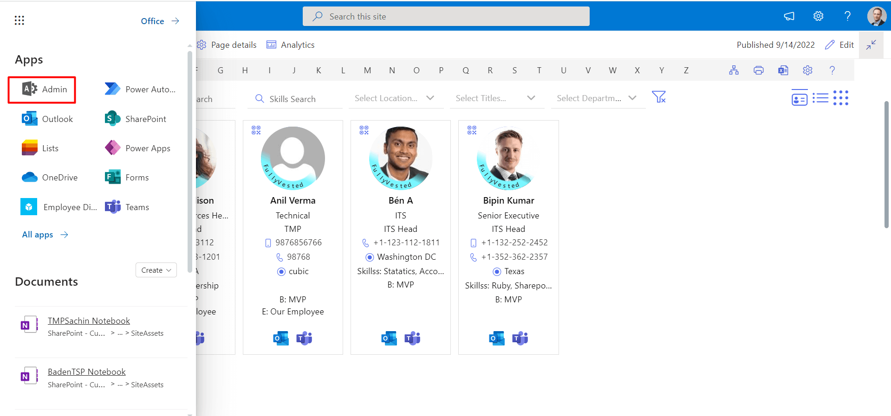 -
Go to the Exchange admin center, click on recipients from the left navigation panel.


-
All users are viewable under mailboxes. Select more options by double-clicking the user's display name.
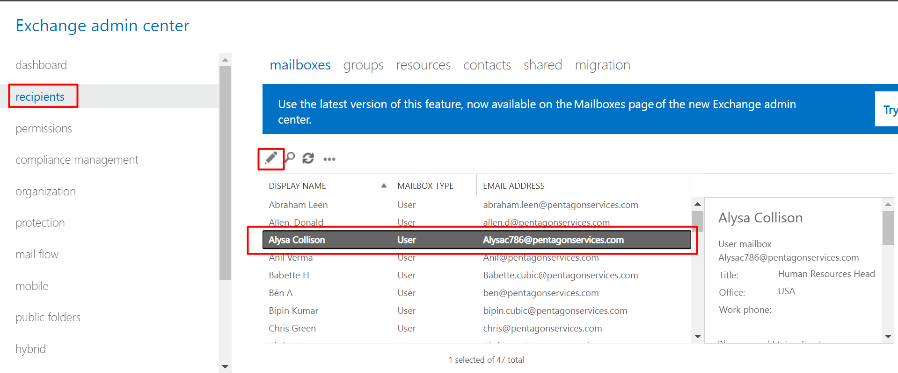
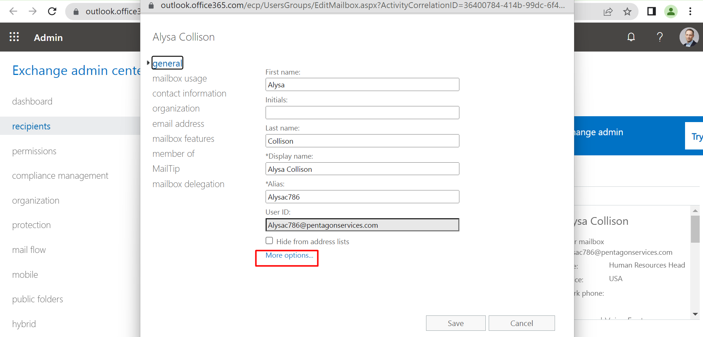 -
Now click on edit icon
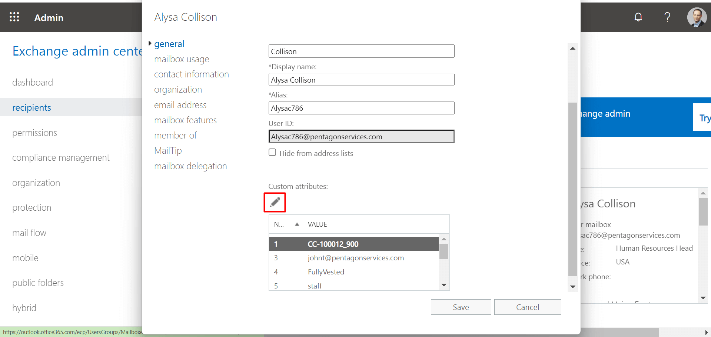 -
Once the Custom Attribute form has opened, enter the attribute in the attribute box and choose OK.
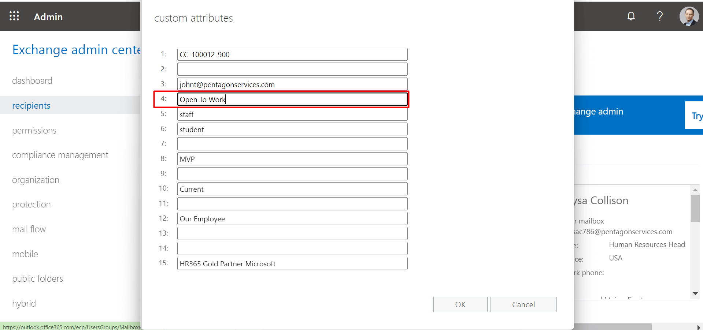 -
Now click on Save button.
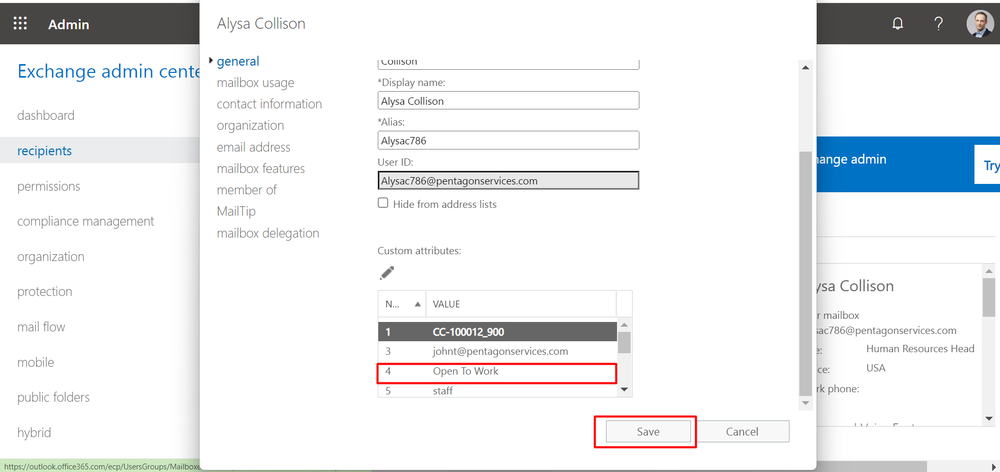 -
In Employee Directory 365, you may generate image profile tags from the Advanced Settings. Navigate to Image Profile Tag and select configure.
-
It will then display the picture profile tag panel.
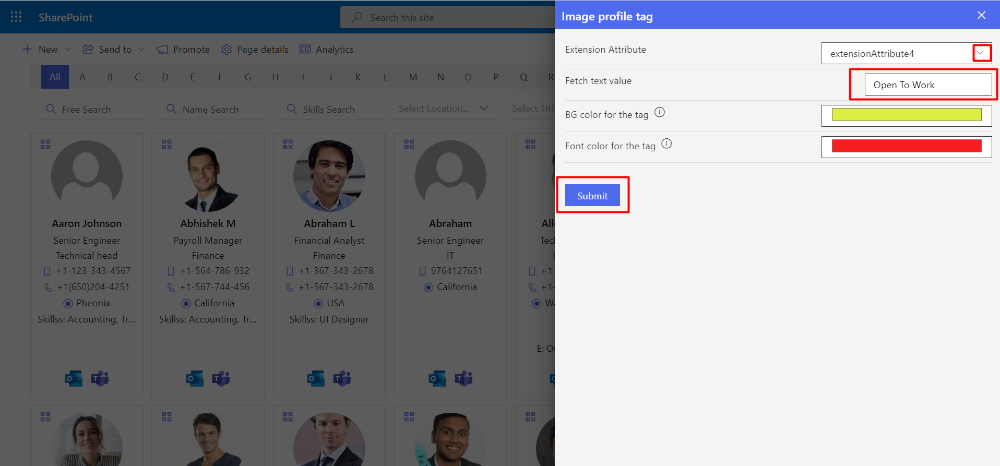
-
The image profile tag will appear on the user's profile card.
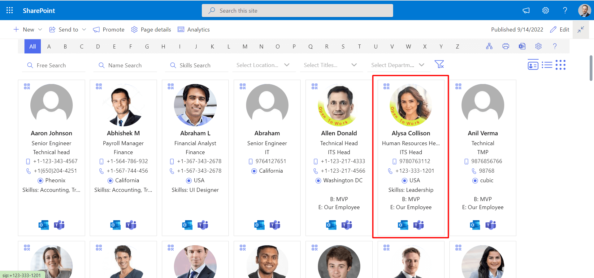
Image Profile Tag
You can follow these steps to add image profile tag on the user profile:
-
Now click on the AD attributes filter.
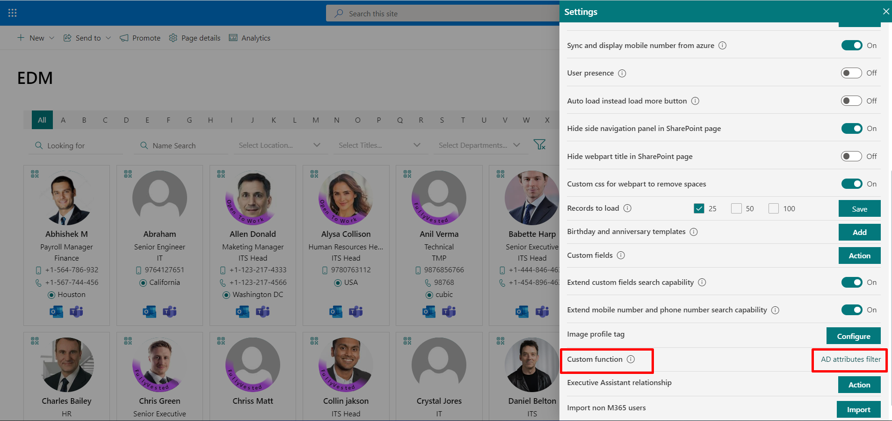 -
You can add Custom Function from the custom function panel. Click on the Add tab , now select property from the Add properties dropdown also add value in the Fetch text value field.
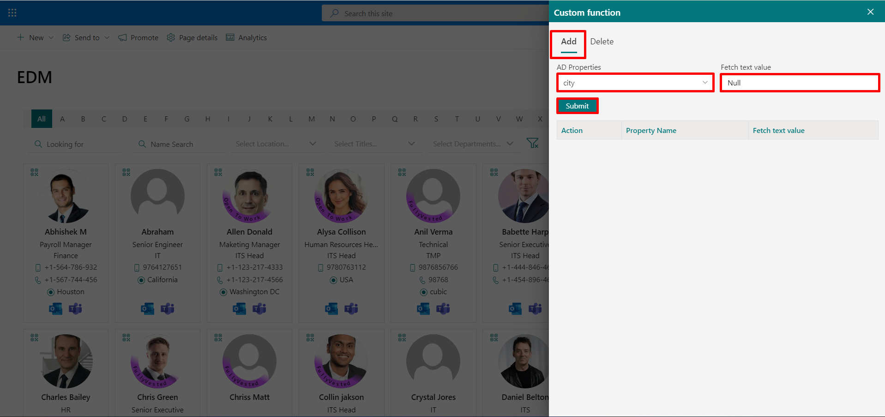 -
Now click on the Submit button and a Custom Function will be added.
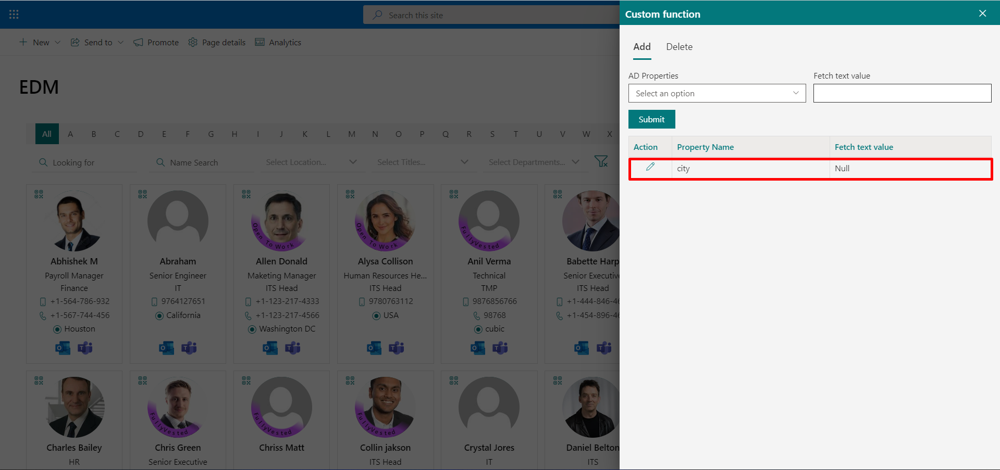
-
By defining value in AD extension attributes , app will display only those records which matches the filter.
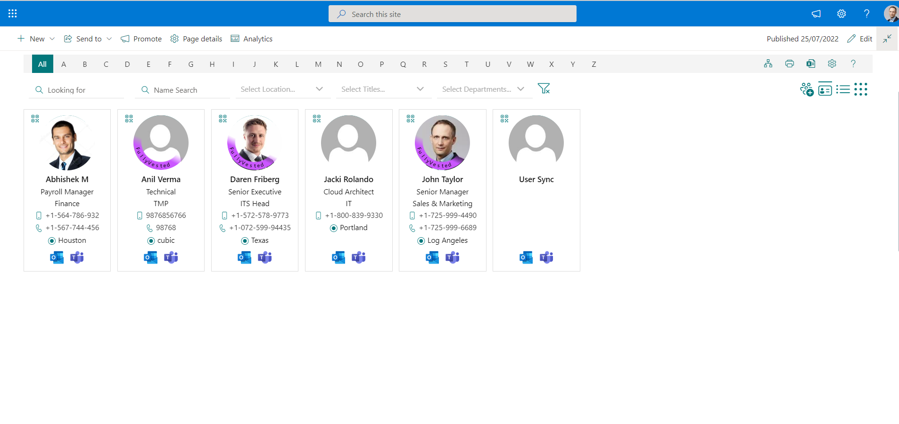
Custom Function
First click on the Advanced setting from the settings panle.
-
From here, Also slect the default topbar
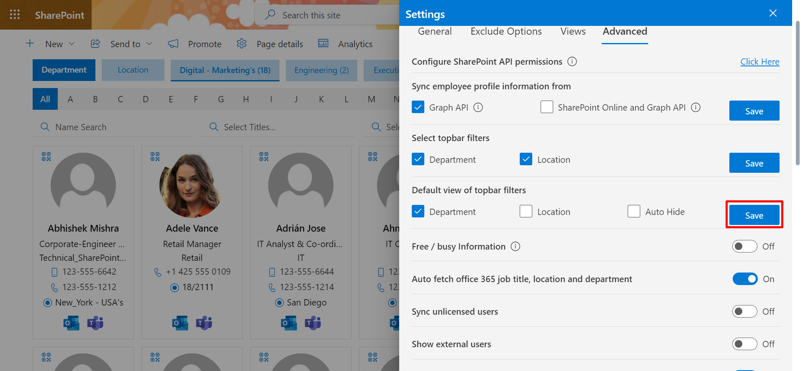
Select topbar filters
Now Select the checkboxes and click the Save button
-
Go to the Exchange admin center, click on recipients from the left navigation panel.
-
Under mailboxes, all users are visible. Double-click the user’s display name and then more options.


-
Add the assistant username address in the custom attributes(3) and click on the OK button.
In the same way, you can add to other users.
-
Go to the Settings> Advance settings> click on the Action button of Executive Assistant relationship.

-
Under Add tab, select the AD Properties and give the Property Name. Then, click on the Submit button.
Here, we selected extension Attribute 3. Because in the Exchange admin center, the assistant username address is added in the custom attribute 3. And given the Property Name as Assistant which is meaningful.
-
Now go to the views in the settings and update the Executive label. Here, updated as Executives.

Executive Assistant relationship
Executive Assistant relationship:From here, you can show the assistant on the user’s profile
card and executives on the assistant’s profile card.
This feature works with SharePoint API SharePoint API, please configure it.
Step1
First, add username address in extension attribute.

To add follow the below steps:
Step2
Result:
For users, their Assistant name shows in the profiles card.

The users are Executives shown in the profile card of the assistant as shown in below.

Employee info page
Employee info page: When you select the action button in advance settings, a panel with Employee info page will open.
You can define specific url in Azure AD extension attribute column, this setting will enable employee info page.Please refer here on how to setup up extension attributes.
From "Admin", go to the "Exchange admin center", Select the recipients by clicking. Click on the mailboxes now.
A pop-up will show when you click on the employee's name. Here, you may modify custom attributes and see personnel information.
You can change the icon of profile card custom url, click the click here url to visit office fabric UI icon page to select the required icon and copy the name of the icon by right clicking on your desired icon. After copying the icon friendly name, please paste here Default icon has name 'FavoriteStar' similarly you can select any icon and change the name here.
On the employee's profile card, a spotlight will be added. The star sign will link you to a specific URL when you click on it.
-
Click on Import button, this displays Add users using csv file.

-
Choose the data loaded CSV file from system and upload the file.

-
Finally click on Save button.
Import non M365 users
From here, you can import non-M365 users. Added users will be displayed when you click on the non365 user's icon on the home page.

To import non-M365 users, follow below steps: